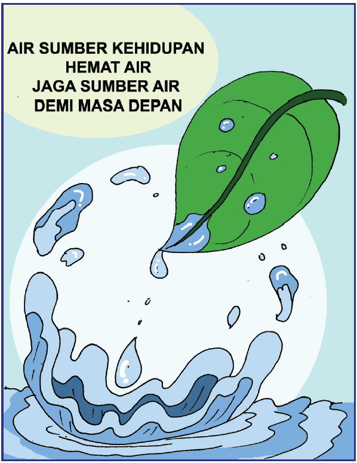

Ayo Membaca
Penghematan Air
Air adalah sumber daya alam yang sangat penting bagi manusia. Manusia sangat bergantung terhadap keberadaan air. Oleh karena itu sudah seharusnya kita menjaga keberadaan air bersih. Keberadaan air bersih yang terus menyusut tiap tahun mengharuskan kita untuk melakukan penghematan. Berikut ini beberapa langkah mudah yang dapat kita lakukan untuk menggunakan air lebih bijak.
1. Matikan kran
Hal yang seringkali membuat air banyak terbuang sia-sia adalah lupa mematikan kran air. Oleh karena itu matikan kran apabila tidak digunakan.
2. Perbaiki kebocoran pipa
Segera memperbaiki pipa air yang bocor meskipun kebocoran hanya sedikit. Pipa air bocor yang sudah diperbaiki dapat mengurangi terbuangnya air bersih dengan sia-sia
3. Mandi dengan shower
Mandi dengan shower lebih hemat air dibandingkan mandi dengan bak mandi karena air yang digunakan lebih sedikit.
4. Bijak dalam mencuci pakaian
Ketika mencuci pakaian gunakan deterjen secukupnya sehingga untuk membilas membutuhkan sedikit air. Gunakan air dengan hemat atau seperlunya untuk mencuci.
5. Gunakan air kembali
Menggunakan air kembali merupakan salah satu langkah bijak. Misalnya menggunakan air bekas cucian beras untuk menyiram tanaman.